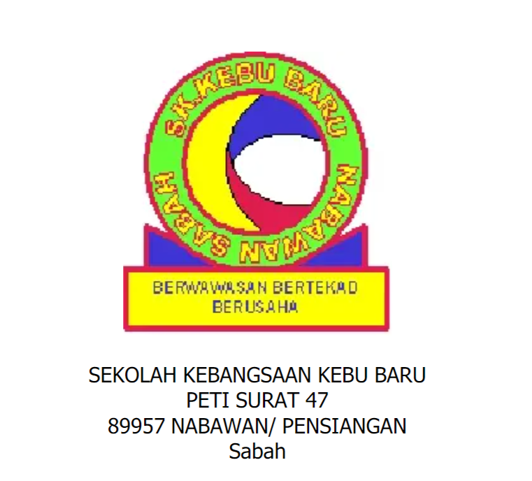
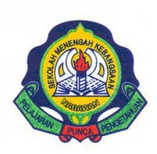

Welcome To My Resume Website
“Simplicity boils down to two steps: Identify the essential. Eliminate the rest.”
HOME
PORTFOLIO
ACHIEVEMENT
EDUCATIONAL
CONTACT

Primary School
Sekolah Kebangsaan Kebu Baru, Nabawan, Sabah
UPSR (2A,3B)

Secondary School
Sekolah Menengah Kebangsaan Nabawan
PT3(3A,3B,1C,1D)
SPM (1A-,3B+,2B)
Post-Secondary
Pusat Tingkatan Enam, Sekolah Menengah Kebangsaan Nabawan
Student of Sport Science
STPM (CGPA 2.84)
Tertiary
University Technology Mara, Puncak Perdana, Selangor
Student of Information System Management
Currently in Second Semester